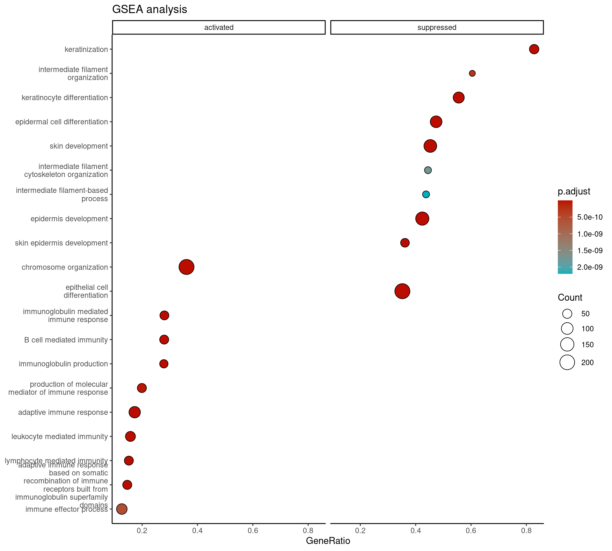
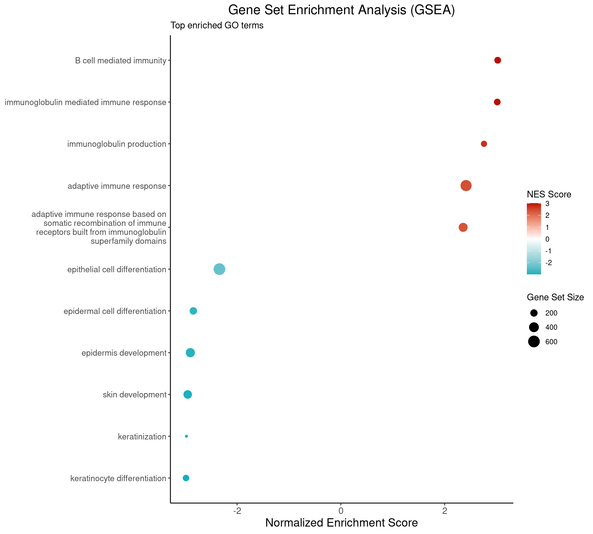
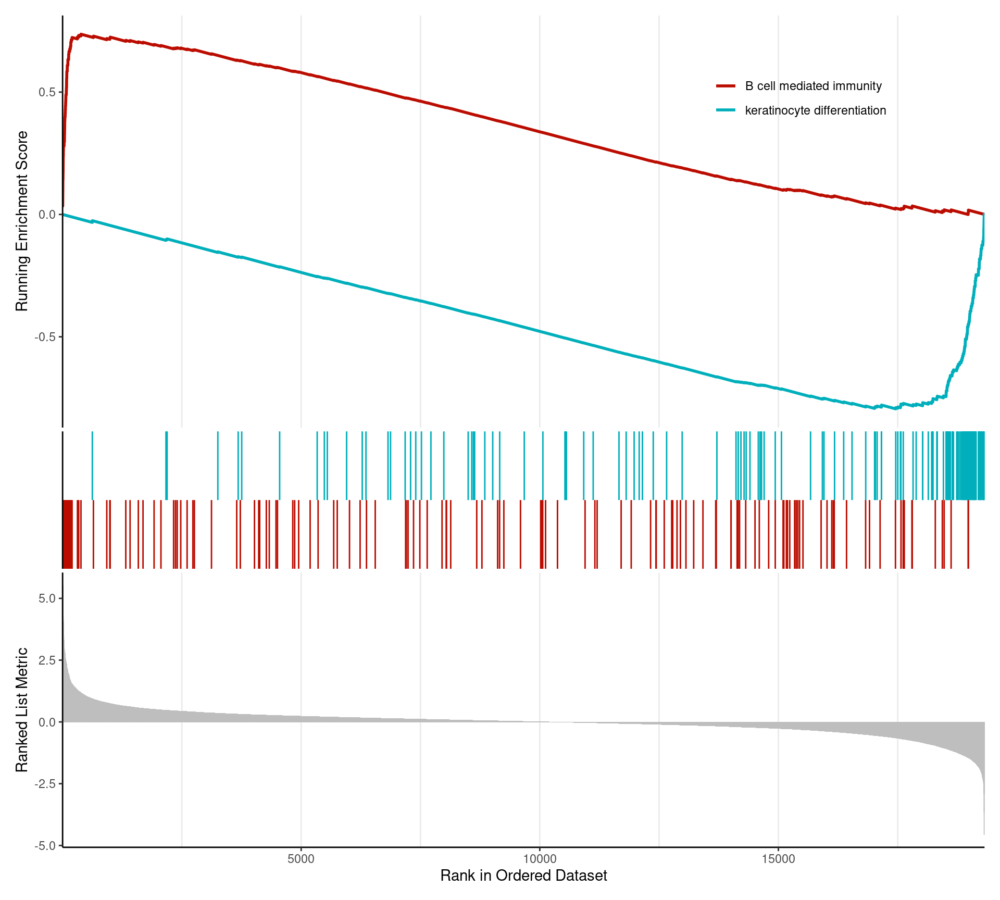
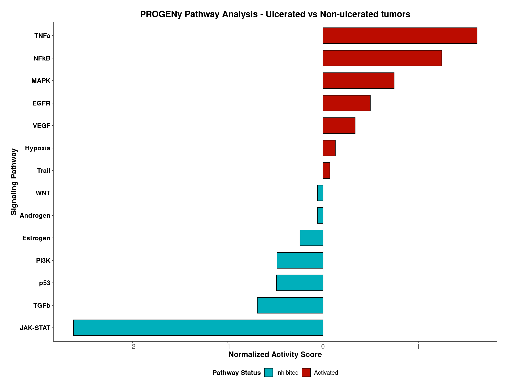

Last updated: 2025-04-04
Checks: 7 0
Knit directory: Ulceration_paper_github/
This reproducible R Markdown analysis was created with workflowr (version 1.7.1). The Checks tab describes the reproducibility checks that were applied when the results were created. The Past versions tab lists the development history.
Great! Since the R Markdown file has been committed to the Git repository, you know the exact version of the code that produced these results.
Great job! The global environment was empty. Objects defined in the global environment can affect the analysis in your R Markdown file in unknown ways. For reproduciblity it’s best to always run the code in an empty environment.
The command set.seed(20250330) was run prior to running
the code in the R Markdown file. Setting a seed ensures that any results
that rely on randomness, e.g. subsampling or permutations, are
reproducible.
Great job! Recording the operating system, R version, and package versions is critical for reproducibility.
Nice! There were no cached chunks for this analysis, so you can be confident that you successfully produced the results during this run.
Great job! Using relative paths to the files within your workflowr project makes it easier to run your code on other machines.
Great! You are using Git for version control. Tracking code development and connecting the code version to the results is critical for reproducibility.
The results in this page were generated with repository version 248524c. See the Past versions tab to see a history of the changes made to the R Markdown and HTML files.
Note that you need to be careful to ensure that all relevant files for
the analysis have been committed to Git prior to generating the results
(you can use wflow_publish or
wflow_git_commit). workflowr only checks the R Markdown
file, but you know if there are other scripts or data files that it
depends on. Below is the status of the Git repository when the results
were generated:
Ignored files:
Ignored: .Rproj.user/
Untracked files:
Untracked: data/DE_results.rds
Untracked: data/DE_results_ranked.rds
Untracked: data/DE_results_ulceration_rankednew.rds
Untracked: data/annotation.rds
Untracked: data/clinical_am_prim.csv
Untracked: data/collectri_network_omnipath.rds
Untracked: data/normalized_counts.rds
Untracked: data/rawcounts_am.rds
Untracked: omnipathr-log/
Untracked: output/ulceration_combined_panel.pdf
Untracked: output/ulceration_mitotic.pdf
Untracked: output/volcanoplot.pdf
Untracked: volcanoplot.pdf
Unstaged changes:
Modified: README.md
Modified: analysis/_site.yml
Deleted: analysis/teeth.Rmd
Deleted: data/teeth.csv
Note that any generated files, e.g. HTML, png, CSS, etc., are not included in this status report because it is ok for generated content to have uncommitted changes.
These are the previous versions of the repository in which changes were
made to the R Markdown (analysis/figure2_GSEA.Rmd) and HTML
(docs/figure2_GSEA.html) files. If you’ve configured a
remote Git repository (see ?wflow_git_remote), click on the
hyperlinks in the table below to view the files as they were in that
past version.
| File | Version | Author | Date | Message |
|---|---|---|---|---|
| Rmd | 248524c | Estef Vazquez | 2025-04-04 | Update |
| Rmd | dd1d8cb | Estef Vazquez | 2025-04-04 | wflow_rename("analysis/test_render_GSEA_TF.Rmd", "analysis/figure2_GSEA.Rmd") |
| html | dd1d8cb | Estef Vazquez | 2025-04-04 | wflow_rename("analysis/test_render_GSEA_TF.Rmd", "analysis/figure2_GSEA.Rmd") |
We perform Gene Set Enrichment Analysis (GSEA) using GO terms and PROGENy to identify pathway activity in ulcerated vs non-ulcerated acral melanoma samples.
# Load required libraries
library(tidyverse)
library(clusterProfiler)
library(enrichplot)
library(DOSE)
library(biomaRt)
library(org.Hs.eg.db)
library(progeny)
library(decoupleR)
library(here)# Data loading
# Load differential expression results pre-ranked for GSEA
ranked_GSEA <- readRDS("data/DE_results_ranked.rds")
ranked_GSEA <- rownames_to_column(ranked_GSEA, var = "ENSEMBL_GENE_ID")
# Load gene annotation
gene_ann <- readRDS("data/annotation.rds")
#gene_ann <- rownames_to_column(gene_ann, var = "ENSEMBL_GENE_ID")
# Add gene symbols
ranked_idmatch <- inner_join(ranked_GSEA, gene_ann, by="ENSEMBL_GENE_ID")
# Make rownames unique
names <- make.unique(ranked_idmatch$external_gene_name)
rownames(ranked_idmatch) <- names
# Extract LFC and create a named vector for GSEA
geneList_FC <- ranked_idmatch[,3]
names(geneList_FC) <- as.character(ranked_idmatch[,1]) # Use ENSEMBL IDs as names
# Sort gene list in decreasing order by LFC
geneList_FC_ordered <- sort(geneList_FC, decreasing = TRUE)
# ---GSEA ---
# Perform Gene Set Enrichment Analysis using GO Biological Process
gsea_BP <- gseGO(geneList = geneList_FC_ordered,
ont ="BP",
keyType = "ENSEMBL",
minGSSize = 3,
maxGSSize = 800,
pvalueCutoff = 0.05,
verbose = TRUE,
OrgDb = org.Hs.eg.db,
pAdjustMethod = "BH",
eps = 0)
go_BP_df <- (as.data.frame(gsea_BP))
# saveRDS(gsea_BP, "results/GSEA_BP_results.rds")
# write_csv(go_BP_df, "results/GSEA_analysis_BP.csv")# --- Visualization ---
# Dotplot showing activated and repressed pathways
dotplot_gsea <- dotplot(
gsea_BP,
showCategory = 10,
split = ".sign",
font.size = 6
) +
facet_grid(.~.sign) +
ggtitle("GSEA analysis") +
theme_classic()
print(dotplot_gsea)
# NES plot for top enriched terms
top_results <- go_BP_df[1:11, ]
library(stringr)
top_results$Description <- str_wrap(top_results$Description, width = 40)
nes_plot <- ggplot(top_results, aes(x = NES, y = reorder(Description, NES))) +
geom_point(aes(color = NES, size = setSize)) +
scale_color_gradient2(
low = ulcer_colors[2],
mid = "white",
high = ulcer_colors[1],
midpoint = 0,
name = "NES Score"
) +
labs(
x = "Normalized Enrichment Score",
y = NULL,
title = "Gene Set Enrichment Analysis (GSEA)",
subtitle = "Top enriched GO terms",
size = "Gene Set Size"
) +
theme_classic() +
theme(
axis.text.y = element_text(size = 10),
axis.text.x = element_text(size = 11),
axis.title.x = element_text(size = 14),
plot.title = element_text(size = 16, hjust = 0.5)
)
print(nes_plot)
# GSEA enrichment plot - most up and down-regulated gene sets
top_indices <- c(which.max(gsea_BP@result$NES), which.min(gsea_BP@result$NES))
enrichment_plots <- gseaplot2(
gsea_BP,
geneSetID = top_indices,
color = ulcer_colors)
print(enrichment_plots)
# Data Preparation
# Extract t-statistic
gene_stats <- ranked_idmatch[, 5]
names(gene_stats) <- ranked_idmatch$external_gene_name
# Get the PROGENy weight matrix
progeny_matrix <- getModel(organism = "Human", top = 100)
# Find common genes between data and the model
common_genes <- intersect(names(gene_stats), rownames(progeny_matrix))
# Subset genes
progeny_matrix_subset <- progeny_matrix[common_genes, , drop = FALSE]
gene_stats_subset <- gene_stats[common_genes]
# Calculate pathway scores using mt multiplication
pathway_scores <- t(progeny_matrix_subset) %*% gene_stats_subset
# Convert to tidy df
progeny_df <- data.frame(
pathway = rownames(pathway_scores),
score = as.numeric(pathway_scores),
stringsAsFactors = FALSE
)
# Normalize (Z-score)
progeny_df$normalized_score <- scale(progeny_df$score)[,1]
# Sort by absolute score to keep most important pathways at top
progeny_df <- progeny_df %>%
arrange(desc(abs(normalized_score)))
# --- Visualization ---
progeny_plot <- ggplot(progeny_df, aes(x = reorder(pathway, normalized_score),
y = normalized_score,
fill = normalized_score > 0)) +
geom_bar(stat = "identity", color = "black", width = 0.7) +
geom_hline(yintercept = 0, linetype = "dashed", color = "gray50") +
scale_fill_manual(values = c("#00AFBB", "#bb0c00"),
labels = c("Inhibited", "Activated"),
name = "Pathway Status") +
coord_flip() +
labs(x = "Signaling Pathway",
y = "Normalized Activity Score",
title = "PROGENy Pathway Analysis - Ulcerated vs Non-ulcerated tumors") +
theme_classic() +
theme(
axis.title = element_text(size = 14, face = "bold"),
axis.text = element_text(size = 12),
axis.text.y = element_text(face = "bold", color = "black"),
plot.title = element_text(size = 16, face = "bold", hjust = 0.5),
plot.subtitle = element_text(size = 14, hjust = 0.5, margin = margin(b = 20)),
legend.title = element_text(size = 12, face = "bold"),
legend.text = element_text(size = 11),
legend.position = "bottom",
plot.margin = margin(t = 20, r = 20, b = 20, l = 20)
)
progeny_plot
#ggsave("figures/PROGENy_pathway_activity.pdf",
# progeny_plot,
# width = 12,
# height = 10,
# dpi = 300)sessionInfo()R version 4.4.0 (2024-04-24)
Platform: x86_64-pc-linux-gnu
Running under: Ubuntu 22.04.4 LTS
Matrix products: default
BLAS: /usr/lib/x86_64-linux-gnu/blas/libblas.so.3.10.0
LAPACK: /usr/lib/x86_64-linux-gnu/lapack/liblapack.so.3.10.0
locale:
[1] LC_CTYPE=en_US.UTF-8 LC_NUMERIC=C
[3] LC_TIME=es_MX.UTF-8 LC_COLLATE=en_US.UTF-8
[5] LC_MONETARY=es_MX.UTF-8 LC_MESSAGES=en_US.UTF-8
[7] LC_PAPER=es_MX.UTF-8 LC_NAME=C
[9] LC_ADDRESS=C LC_TELEPHONE=C
[11] LC_MEASUREMENT=es_MX.UTF-8 LC_IDENTIFICATION=C
time zone: America/Mexico_City
tzcode source: system (glibc)
attached base packages:
[1] stats4 stats graphics grDevices utils datasets methods
[8] base
other attached packages:
[1] here_1.0.1 decoupleR_2.10.0 progeny_1.26.0
[4] org.Hs.eg.db_3.19.1 AnnotationDbi_1.66.0 IRanges_2.38.1
[7] S4Vectors_0.42.1 Biobase_2.64.0 BiocGenerics_0.50.0
[10] biomaRt_2.60.1 DOSE_3.30.5 enrichplot_1.24.4
[13] clusterProfiler_4.12.6 lubridate_1.9.4 forcats_1.0.0
[16] stringr_1.5.1 dplyr_1.1.4 purrr_1.0.2
[19] readr_2.1.5 tidyr_1.3.1 tibble_3.2.1
[22] ggplot2_3.5.1 tidyverse_2.0.0 workflowr_1.7.1
loaded via a namespace (and not attached):
[1] RColorBrewer_1.1-3 rstudioapi_0.17.1 jsonlite_1.8.9
[4] magrittr_2.0.3 farver_2.1.2 rmarkdown_2.29
[7] fs_1.6.5 zlibbioc_1.50.0 vctrs_0.6.5
[10] memoise_2.0.1 ggtree_3.12.0 progress_1.2.3
[13] htmltools_0.5.8.1 curl_6.0.1 gridGraphics_0.5-1
[16] parallelly_1.41.0 sass_0.4.9 bslib_0.8.0
[19] plyr_1.8.9 httr2_1.0.7 cachem_1.1.0
[22] whisker_0.4.1 igraph_2.1.2 lifecycle_1.0.4
[25] pkgconfig_2.0.3 gson_0.1.0 Matrix_1.6-5
[28] R6_2.5.1 fastmap_1.2.0 GenomeInfoDbData_1.2.12
[31] digest_0.6.37 aplot_0.2.4 colorspace_2.1-1
[34] patchwork_1.3.0 ps_1.8.1 rprojroot_2.0.4
[37] RSQLite_2.3.9 labeling_0.4.3 filelock_1.0.3
[40] timechange_0.3.0 httr_1.4.7 polyclip_1.10-7
[43] compiler_4.4.0 bit64_4.5.2 withr_3.0.2
[46] BiocParallel_1.38.0 viridis_0.6.5 DBI_1.2.3
[49] ggforce_0.4.2 R.utils_2.12.3 MASS_7.3-60
[52] rappdirs_0.3.3 tools_4.4.0 scatterpie_0.2.4
[55] ape_5.8-1 httpuv_1.6.15 R.oo_1.27.0
[58] glue_1.8.0 callr_3.7.6 nlme_3.1-165
[61] GOSemSim_2.30.2 promises_1.3.2 shadowtext_0.1.4
[64] grid_4.4.0 getPass_0.2-4 reshape2_1.4.4
[67] fgsea_1.30.0 generics_0.1.3 gtable_0.3.6
[70] tzdb_0.4.0 R.methodsS3_1.8.2 data.table_1.16.4
[73] hms_1.1.3 xml2_1.3.6 tidygraph_1.3.1
[76] XVector_0.44.0 ggrepel_0.9.6 pillar_1.10.0
[79] yulab.utils_0.1.8 later_1.4.1 splines_4.4.0
[82] tweenr_2.0.3 BiocFileCache_2.12.0 treeio_1.28.0
[85] lattice_0.22-5 bit_4.5.0.1 tidyselect_1.2.1
[88] GO.db_3.19.1 Biostrings_2.72.1 knitr_1.49
[91] git2r_0.33.0 gridExtra_2.3 xfun_0.49
[94] graphlayouts_1.2.1 stringi_1.8.4 UCSC.utils_1.0.0
[97] lazyeval_0.2.2 ggfun_0.1.8 yaml_2.3.10
[100] evaluate_1.0.1 codetools_0.2-19 ggraph_2.2.1
[103] qvalue_2.36.0 ggplotify_0.1.2 cli_3.6.3
[106] munsell_0.5.1 processx_3.8.4 jquerylib_0.1.4
[109] Rcpp_1.0.13-1 GenomeInfoDb_1.40.1 dbplyr_2.5.0
[112] png_0.1-8 parallel_4.4.0 blob_1.2.4
[115] prettyunits_1.2.0 viridisLite_0.4.2 tidytree_0.4.6
[118] scales_1.3.0 crayon_1.5.3 rlang_1.1.4
[121] cowplot_1.1.3 fastmatch_1.1-4 KEGGREST_1.44.1
sessionInfo()R version 4.4.0 (2024-04-24)
Platform: x86_64-pc-linux-gnu
Running under: Ubuntu 22.04.4 LTS
Matrix products: default
BLAS: /usr/lib/x86_64-linux-gnu/blas/libblas.so.3.10.0
LAPACK: /usr/lib/x86_64-linux-gnu/lapack/liblapack.so.3.10.0
locale:
[1] LC_CTYPE=en_US.UTF-8 LC_NUMERIC=C
[3] LC_TIME=es_MX.UTF-8 LC_COLLATE=en_US.UTF-8
[5] LC_MONETARY=es_MX.UTF-8 LC_MESSAGES=en_US.UTF-8
[7] LC_PAPER=es_MX.UTF-8 LC_NAME=C
[9] LC_ADDRESS=C LC_TELEPHONE=C
[11] LC_MEASUREMENT=es_MX.UTF-8 LC_IDENTIFICATION=C
time zone: America/Mexico_City
tzcode source: system (glibc)
attached base packages:
[1] stats4 stats graphics grDevices utils datasets methods
[8] base
other attached packages:
[1] here_1.0.1 decoupleR_2.10.0 progeny_1.26.0
[4] org.Hs.eg.db_3.19.1 AnnotationDbi_1.66.0 IRanges_2.38.1
[7] S4Vectors_0.42.1 Biobase_2.64.0 BiocGenerics_0.50.0
[10] biomaRt_2.60.1 DOSE_3.30.5 enrichplot_1.24.4
[13] clusterProfiler_4.12.6 lubridate_1.9.4 forcats_1.0.0
[16] stringr_1.5.1 dplyr_1.1.4 purrr_1.0.2
[19] readr_2.1.5 tidyr_1.3.1 tibble_3.2.1
[22] ggplot2_3.5.1 tidyverse_2.0.0 workflowr_1.7.1
loaded via a namespace (and not attached):
[1] RColorBrewer_1.1-3 rstudioapi_0.17.1 jsonlite_1.8.9
[4] magrittr_2.0.3 farver_2.1.2 rmarkdown_2.29
[7] fs_1.6.5 zlibbioc_1.50.0 vctrs_0.6.5
[10] memoise_2.0.1 ggtree_3.12.0 progress_1.2.3
[13] htmltools_0.5.8.1 curl_6.0.1 gridGraphics_0.5-1
[16] parallelly_1.41.0 sass_0.4.9 bslib_0.8.0
[19] plyr_1.8.9 httr2_1.0.7 cachem_1.1.0
[22] whisker_0.4.1 igraph_2.1.2 lifecycle_1.0.4
[25] pkgconfig_2.0.3 gson_0.1.0 Matrix_1.6-5
[28] R6_2.5.1 fastmap_1.2.0 GenomeInfoDbData_1.2.12
[31] digest_0.6.37 aplot_0.2.4 colorspace_2.1-1
[34] patchwork_1.3.0 ps_1.8.1 rprojroot_2.0.4
[37] RSQLite_2.3.9 labeling_0.4.3 filelock_1.0.3
[40] timechange_0.3.0 httr_1.4.7 polyclip_1.10-7
[43] compiler_4.4.0 bit64_4.5.2 withr_3.0.2
[46] BiocParallel_1.38.0 viridis_0.6.5 DBI_1.2.3
[49] ggforce_0.4.2 R.utils_2.12.3 MASS_7.3-60
[52] rappdirs_0.3.3 tools_4.4.0 scatterpie_0.2.4
[55] ape_5.8-1 httpuv_1.6.15 R.oo_1.27.0
[58] glue_1.8.0 callr_3.7.6 nlme_3.1-165
[61] GOSemSim_2.30.2 promises_1.3.2 shadowtext_0.1.4
[64] grid_4.4.0 getPass_0.2-4 reshape2_1.4.4
[67] fgsea_1.30.0 generics_0.1.3 gtable_0.3.6
[70] tzdb_0.4.0 R.methodsS3_1.8.2 data.table_1.16.4
[73] hms_1.1.3 xml2_1.3.6 tidygraph_1.3.1
[76] XVector_0.44.0 ggrepel_0.9.6 pillar_1.10.0
[79] yulab.utils_0.1.8 later_1.4.1 splines_4.4.0
[82] tweenr_2.0.3 BiocFileCache_2.12.0 treeio_1.28.0
[85] lattice_0.22-5 bit_4.5.0.1 tidyselect_1.2.1
[88] GO.db_3.19.1 Biostrings_2.72.1 knitr_1.49
[91] git2r_0.33.0 gridExtra_2.3 xfun_0.49
[94] graphlayouts_1.2.1 stringi_1.8.4 UCSC.utils_1.0.0
[97] lazyeval_0.2.2 ggfun_0.1.8 yaml_2.3.10
[100] evaluate_1.0.1 codetools_0.2-19 ggraph_2.2.1
[103] qvalue_2.36.0 ggplotify_0.1.2 cli_3.6.3
[106] munsell_0.5.1 processx_3.8.4 jquerylib_0.1.4
[109] Rcpp_1.0.13-1 GenomeInfoDb_1.40.1 dbplyr_2.5.0
[112] png_0.1-8 parallel_4.4.0 blob_1.2.4
[115] prettyunits_1.2.0 viridisLite_0.4.2 tidytree_0.4.6
[118] scales_1.3.0 crayon_1.5.3 rlang_1.1.4
[121] cowplot_1.1.3 fastmatch_1.1-4 KEGGREST_1.44.1